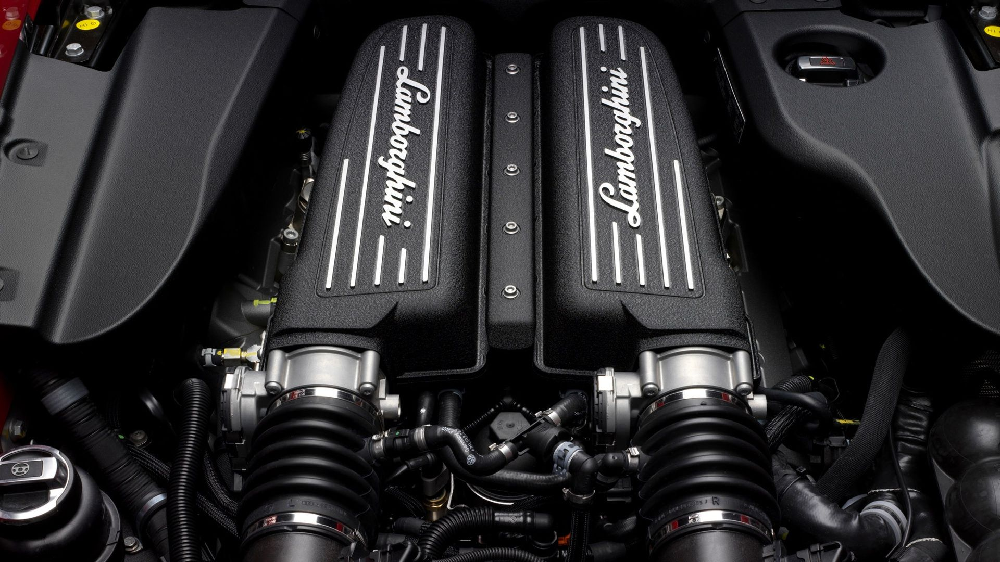
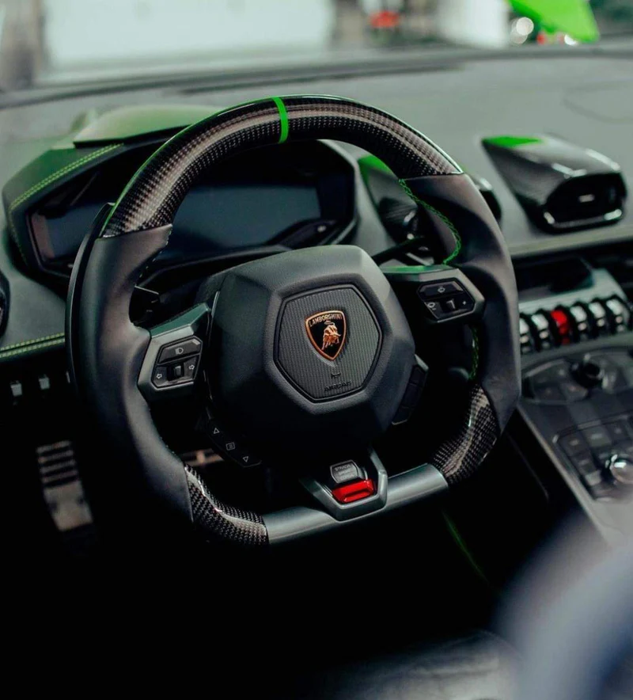

LAMBORGHINI HURACAN
ENGINE |
The Lamborghini Huracán is powered by a breathtaking 5.2-liter naturally aspirated V10 engine, delivering an exhilarating blend of raw power and precision engineering. With up to 640 horsepower and lightning-fast throttle response, this engine offers spine-tingling performance, launching the Huracán from 0 to 60 mph in just 2.9 seconds. Engineered for both track dominance and road-driving thrills, its high-revving character and unmistakable exhaust note define the pure, emotional driving experience Lamborghini is known for. Whether in the Huracán EVO, STO, or Tecnica, this V10 engine stands as a true masterpiece of automotive performance. |
WHEEL & TIRES
|
The Lamborghini Huracán features high-performance wheels and tires designed to deliver exceptional grip, handling, and style. Available in a range of striking designs and finishes, the lightweight alloy wheels are engineered to enhance both aerodynamics and brake cooling. They are paired with specially developed Pirelli P Zero tires, optimized for maximum traction and responsiveness in all driving conditions. Whether on the road or the track, this precision-matched setup ensures that the Huracán maintains its razor-sharp cornering ability and confidence-inspiring stability, embodying Lamborghini’s relentless pursuit of performance and design excellence. |
STEERING |
The Lamborghini Huracán is equipped with an advanced steering system that delivers precise, responsive control for an unmatched driving experience. Featuring Lamborghini Dynamic Steering (LDS) in select models, the system adapts in real time to driving conditions and speed, offering sharper handling at low speeds and enhanced stability at high speeds. Paired with the car’s lightweight chassis and performance-tuned suspension, the steering provides exceptional feedback and agility, allowing drivers to feel completely connected to the road. Whether navigating tight corners or cruising at high speeds, the Huracán's steering ensures a perfect blend of comfort, control, and pure driving emotion. |
SEATS
|
The Lamborghini Huracán features meticulously crafted seats that combine luxurious comfort with race-inspired support. Designed to keep the driver firmly in place during high-performance driving, the seats are available in a range of premium materials, including fine leather and Alcantara, with customizable stitching and color options. Ergonomically contoured and engineered for long-distance comfort, they offer the perfect balance of elegance and functionality. Whether you choose the standard sport seats or the more aggressive carbon fiber racing seats, the interior of the Huracán reflects Lamborghini’s commitment to performance-driven luxury and Italian craftsmanship. |
BRAKES
|
The Lamborghini Huracán is equipped with a state-of-the-art braking system designed to deliver unmatched stopping power and control. Featuring carbon-ceramic disc brakes as standard, the system provides exceptional performance even under extreme conditions, ensuring consistent, fade-resistant braking on both road and track. With large ventilated rotors and advanced calipers, the Huracán's brakes offer precise modulation and rapid response, giving drivers the confidence to push the car to its limits. Engineered for high-performance driving, the braking system is a critical component of the Huracán’s dynamic capabilities, reflecting Lamborghini’s relentless focus on safety, innovation, and performance. |
DRIVING TECHNOLOGY |
The Lamborghini Huracán is packed with cutting-edge driving technology that enhances performance, safety, and driver engagement. At the heart of its advanced systems is Lamborghini’s ANIMA (Adaptive Network Intelligent Management), which allows drivers to select from multiple driving modes—Strada, Sport, and Corsa—to tailor the car’s behavior to their preferences and road conditions. The Huracán also features advanced traction control, torque vectoring, and optional Lamborghini Integrated Vehicle Dynamics (LDVI), a predictive system that continuously adjusts the car’s setup for optimal performance. From responsive all-wheel drive to real-time driving data displays, every piece of technology in the Huracán is engineered to deliver an intuitive, thrilling, and highly connected driving experience. |